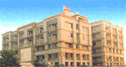
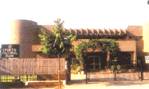
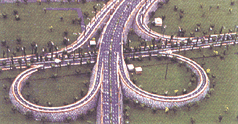
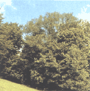

<TABLE class=inner_text width="100%" border=0>
                          <TBODY>
                          <TR>
                            <TD>
                              <DIV><B>About Noida:</B><BR><BR>A Brief compendium of its 
                              achivements, in the years passed by, here we 
                              strive to present you the matchless facilities 
                              available in NOIDA. NOIDA Constituted under the 
                              U.P. Industrial Area Development Act, 1976, NOIDA 
                              has now emerged as a planned, integrated, mordern 
                              Industrial City, well connect to Delhi through a 
                              network of roads, national highways and the ultra 
                              - morden DND flyover, offering inter - road 
                              linkages to all parts of the country. Spread over 
                              20,316 hectares, with many sectors fully 
                              developed, NOIDA offers a pollution free high 
                              standard of living and highly supportive 
                              industrial environment with its unique 
                              infrastucture providing numerous, matchless 
                              facilities. Today, it stands as an enviavle 
                              monument of the concept of integrated Industrial 
                              township in the world, with smooth and wide roads, 
                              well developed land, unintrrupted power supply, 
                              clean and save drinking water, unfailing 
                              telephony, and splendid residential complexes in 
                              the serene and peaceful enviornment with greenery 
                              all around<BR><BR>One of the largest Industrial 
                              Townships of Asia Not very far from Delhi yet away 
                              from the dirt, grime and pollution, part of the 
                              National Capital Region, Noida is the industrial 
                              fairy land of the nation. New Ohkla Industrial 
                              Development Authority - NOIDA is one of the 
                              largest planned industrial townships of Asia. Set 
                              up in 1976, with a view to develop an Integrated 
                              Industrial Township for the industrial growth of 
                              the area, under the Uttar Pradesh Industrial Area 
                              Development Act, it best symbolizes harmony 
                              between human habitat and Industrial Enterprise. 
                              <BR><BR><B>Location</B><BR>It is located in the state 
                              of Uttar Pradesh at the fringes of Delhi, the 
                              national capital. Located athe doorstep od Delhi, 
                              NOIDA is only 14 Kms. away from Connaught Place. 
                              The 550 mtr. long, eight lane NOIDA Toll Bridge 
                              across Yamuna connecting Maharani Bagh in Delhi to 
                              NOIDA has further reduced the distance, time and 
                              cost of commuting to and fro Delhi-NOIDA. Noida 
                              has all the key advantages of Delhi without having 
                              its disadvantages. The development area 
                              encompasses about 20, 316 hectares of land 
                              consisting of 81 villages of district Gautam Budh 
                              Nagar.<BR><BR>Noida is bounded by NH-24 Bye-Pass 
                              in the North beyond which the Ghaziabad 
                              Development Area exists, in the East by River 
                              Hindon beyond which Greater Noida Industrial 
                              Development Area exists, in the West by River 
                              Yamuna, beyond which are the States of Delhi and 
                              Haryana and in the South is the meeting point of 
                              the rivers Yamuna and Hindon. <BR><BR><B>Green and 
                              Eco City</B><BR>Unlike many other industrial 
                              areas, infrastructural facilities in this area 
                              have well preceded development. Emphasis has been 
                              laid on developing Noida, as a green heaven - 
                              named GREEN NOIDA CLEAN NOIDA, totally free from 
                              pollution<BR><BR><B>State-of-the-art 
                              Infrastructure</B><BR>In NOIDA, the city free from 
                              pollution and traffic-jams, the Authority has 
                              developed a number of green belts, gardens and 
                              parks to give further impetus to its pollution 
                              free environment. A modern, efficient and 
                              comprehensive infrastructure comprising of 
                              residential facilities, commercial areas, business 
                              centres, office complexes, recreational areas will 
                              complement the continuously developing industrial 
                              sectors within the Noida limits. The manifold 
                              advantages of being in Noida include the abundance 
                              of skilled, semi-skilled and unskilled labour and 
                              a ready access to the services of experienced 
                              managerial personnel<BR><BR><B>Grid - Iron 
                              Concept</B><BR>Noida has been planned on the grid 
                              iron concept and employs state-of-the-art 
                              technology in Engineering, Urban Planning and 
                              Architecture. Significantly, it conceptualizes the 
                              needs of a fast developing city of the future. The 
                              Action Plan and approach compares well with 
                              international standards and is aimed at providing 
                              rapid momentum to the growth of the industrial 
                              sector both in the State of Uttar Pradesh and the 
                              Country. <BR><BR><B>Power Supply and 
                              Telephone</B><BR>Power supply in Noida is 
                              uninterrupted. Telephony in NOIDA is digital and 
                              optical fibre cable based with state-of-the art 
                              electronic exchange providing Integration Service 
                              Digital Network (ISDN) services facilitating high 
                              quality voice , data and image transfer, inter 
                              computer file transfer, high quality and speed fax 
                              transmission, video conferencing and a variety of 
                              phone plus services. There is also local call 
                              connectivity to Delhi, Faridabad, Ghaziabad and 
                              other adjoining towns, reducing cost of 
                              communication upto 200 Kilometer 
                              peripheri<BR><BR><B>Drinking Water</B><BR>Drinking 
                              water supply is in abundance in NOIDA. The 90 
                              tubewells, 5 rainy wells, 25 overhead tanks and 
                              850 Kms. long water pipeline network carry about 2 
                              Lakh KLD drinking water per day, making the per 
                              capita availability of drinking water to 225 
                              litres. In addition to this, the 49,400 KLD Ganga 
                              water project has already started. Plans are also 
                              afoot to make use of rain water by means of modern 
                              indigenous technology for agricultural purposes to 
                              supplement the availability of water to meet the 
                              future requirements.<BR><BR><B>Roads</B><BR>The 
                              roads in NOIDA are smooth and wide for movement of 
                              traffic with ease and comfort. NH 2, Link Road, 
                              Kondli Road, Noida-Greater Noida Expressway, the 
                              Noida-Agra-Mathura Expressway under construction 
                              and the eight-lane DND flyover with Toll Bridge 
                              already operational further provide ease and 
                              comfort in road-traffic in to and out of the city 
                              of NOIDA. The DND flyover with Toll Bridge and 
                              Toll Plaza is a unique project. In different 
                              sectors of NOIDA, the NOIDA Authority is 
                              maintaining 400 Kms. long internal roads and 125 
                              Kms. long boundary roads which make the 
                              intra-city-road-traffic much easier and 
                              comfortable. <BR><BR><B>Law and Order</B><BR>The 
                              law and order situation in Noida is impeccable. To 
                              make this possible, in line with the National 
                              Capital Territory of Delhi, the network of Police 
                              Posts, Police Stations and round-the-clock Police 
                              Patrolling has been set up through out NOIDA 
                              <BR><BR><B>Environment</B><BR>This year, with a view to 
                              keep the city green and clean to maintain the 
                              ecological balance of the environment in NOIDA, a 
                              project to develop parks in 165 acres of the land 
                              comprising of 95 acres green belt and 150 kms. 
                              road side tree-plantations is on the anvil. The 
                              two sewage treatment plants in operation is on the 
                              anvil. The two sevage treatment plants in 
                              operation in noida, producing 7 crore litres of 
                              water per day are intended to irrigate the green 
                              belt areas and parks growing flora of a wide 
                              variety in different sectors of NOIDA. Help would 
                              also be extented to create underground water 
                              supply facilities, and to make possible provision 
                              of water at cheaper rates for irrigation purpose. 
                              To maitain the ecological balance , the Authority 
                              envisages to involve NGOs and Governamental 
                              organisations in the development and the 
                              maintainance of green belts and parks. Bsides 
                              extending the clarion calls to the public towards 
                              the environmental issues, this approach will give 
                              a new dimntion and direction to our task. This 
                              year NOIDA has given emphasis on planting 
                              traditional trees involved about 65000 neem, 
                              jamun,tamarind,gullar, sesame, arjun and pilkhan 
                              <BR><BR><B>Dream Housing Projects</B><BR>About 
                              35.66 % area of NOIDA is being developed as a 
                              residential areas. 4,49,456 sq. mtr. land has been 
                              year marked as residential areas and rest meant 
                              for group housing projects. For the working class, 
                              engineers/employees of different establishments, 
                              project has been introduced involving constrution 
                              of 31035 residential units in duplex, HIG,MIG,LIG 
                              and EWS categories. For sheltering those below 
                              poverity line, under the SHRAMIK KUNJ' project, 
                              4952 houses of one room set have been constructed. 
                              Plans are also afoot on aproject to bring a Senior 
                              Citizens' ressidential 
                              complex.<BR><BR><B>Commercial</B><BR>Side by side 
                              with the ceation of commercial centres in each 
                              sector , as a partof its palnned and synchronous 
                              development, a full-fledged commercial complex has 
                              been developed in sector-18 where one get 
                              everything from on ordinary writing paper &amp; 
                              stationery to computer-print paper &amp; 
                              stationery, clothing material to fashionable 
                              garments, simple tools &amp; tackles to electrical 
                              &amp; electronic goods &amp; appliances etc. This 
                              area is replete with well known brands like Ebony, 
                              Nanz, Rayban, U.C.B., Red Tape, Hot Breads, Levis, 
                              Reebok, Adidas, Parx &amp; Raymond etc. The large 
                              &amp; spacious buildings here viz. Ansal Plaza, 
                              Ocean Plaza, Sab Mall, Centre Stage Mall,Supertech 
                              Mall, Vishal Chambers, etc. house leading Indian 
                              corporate &amp; multinational business houses. 
                              Apart from the reputed hotels like Nirula, Shipra 
                              Hotel, Savvoy &amp; Raddisson there are also a 
                              host of restaurants like McDonald, Domino 
                              Pizza,Subway, Pizza Hut, Bamboo Shoots,Haveli, 
                              Purani Dilli, Kebab Factory, Ice-cube, Ruby's 
                              Tuesday, Barista coffee shop etc. serving a wide 
                              variety of haute cuisine suiting everyone's 
                              cluinary taste<BR><BR>NOIDA city center is being 
                              developed on a 99 hectre plot. The city center 
                              will have boundless facilities within viz. big 
                              offices of trade and commerce, cultural centers, 
                              service industries, five star hotels, 
                              international standard restaurants, whole sale 
                              outlets, multiplex, center for socio- cultural 
                              activities, government/semi-government offices, 
                              public facilities, residential blocks &amp; 
                              residence cum work centers, and premises for 
                              informal/unorganised sectors. On completion, the 
                              city center is expected to give a face lift- a new 
                              identity to NOIDA in the socio-economic, cultural 
                              trade and commercial area. 
                              <BR><BR><B>Institutional</B><BR>NOIDA has given 
                              topmost priority to the development of Educational 
                              Institutions. The leading schools viz. Amity 
                              International, Apeejay, Army Public School, D.P.S, 
                              Khaitan, Cambridge, Somerville etc. are providing 
                              school level education facilities to not only the 
                              children of NOIDA residents, but also to residents 
                              of Delhi. The number of higher Educational, 
                              Management and Technical Institutions also abounds 
                              in Delhi. To name a few are NIIT, ITP, Infosys 
                              Computer Education Centre, V.V.Giri Labour 
                              Institute, J.S.S Engineering College, Women's 
                              Polytechnic, Amity Business School, Amity School 
                              of Information Technology, Amity Institute of 
                              Biotechnology. Leading Management Institutions 
                              like IIM is also making NOIDA one of its centres 
                              of operation<BR><BR>Many Public Sector 
                              Undertakings and other Organisations have also 
                              made Noida their homes. NTPC, Birla Research 
                              Institute, IBP, GAIL, KRIBHCO, PPCL, NFL, FCI, 
                              HUDCO, ICMR, BHEL, PDIL, IOC, BP, NIL, FDDI, 
                              ER&amp;DI etc. are to name a few <BR><BR><B></td></tr></body></table>